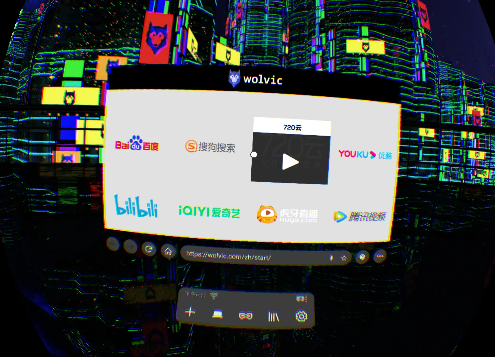
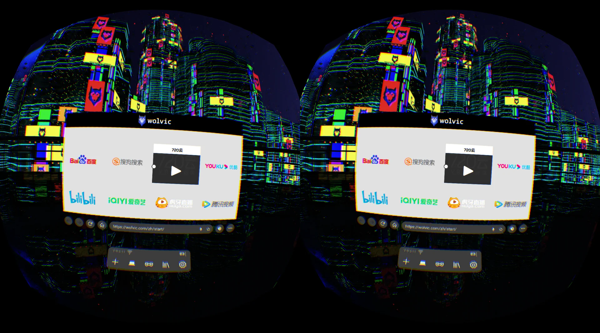

Native display and WebXR
Restores the legacy PicoVR backend with GeckoView 128, G2 head tracking and controller input. Historical device records cover browsing, video textures and immersive WebXR.

A newer web and VR video entry point for Pico G2. Built on Wolvic 1.6.2, GeckoView 128 and native PicoVR.
Historical Pico G2 capture · single-eye crop · not the final candidate
Native display, video handoff and player controls adapted around real Pico G2 workflows. An independent community project, unaffiliated with Wolvic or PICO.
Restores the legacy PicoVR backend with GeckoView 128, G2 head tracking and controller input. Historical device records cover browsing, video textures and immersive WebXR.
Native 2D, 180°, 360° and stereo projection, with early crop and projection white-screen fixes. Later candidates add general video handoff, per-page Quest UA and shared player-control fixes.
The new candidate discovers same-content codecs through player and protocol APIs. It separates codec from resolution, shows only confirmed playable alternatives and verifies switches with state protection and recovery.
The 2026-11-13 build adds general video tools, native handoff, codec selection, per-page UA and player fixes. Functional assets match the final tested baseline; the relabelled APK has not had a separate headset installation.
0052 has historical device acceptance for the native backend and early projection fixes, without the later complete codec tools.
The new build retains the test package ID and coexists with 0052, without sharing or automatically migrating browser data.
Download the 0052 fallbackPublished builds, later candidates and controlled tests have different evidence. An implemented adapter is not proof of codec switching on every website.
| Path | Evidence | Boundary |
|---|---|---|
| PicoVR / WebXR | 0052 device acceptance for playback, tracking, controls and textures. | Pico G2 family scope; not a current OpenXR build. |
| Handoff / projection | Historical native handoff on paths such as Hamezo, plus user regression checks. | Page fullscreen, native projection and site VR stay distinct; special projection models are not universally supported. |
| Video.js / VHS | Natural Eporner H.264 / AV1 switching in both directions. | A manifest timeout is recorded; no universal success or performance claim. |
| xPlayer | Historical natural xHamster dual-codec and quality-mode checks. | Not fully rerun in the final APK; the video must actually offer two codecs. |
| HTML / hls.js / dash.js | Controlled device player, state and recovery tests. | Not proof of natural dual-codec support on arbitrary websites. |
| Shaka / MGP / Delight | Controlled switching and varying natural binding or discovery evidence. | Natural dual codecs, audio, quality mapping and VR combinations still have specific gaps. |
| Bilibili / ordinary pages | Site controls retained; historical ordinary-use regression feedback. | The last round did not verify every quality and VR combination. |
Use the headset package installer or ADB from your computer. Verify the downloaded APK with SHA256 first.
Download on the headset, or transfer the APK from your computer into its Download folder.
Allow the installation source when prompted. ADB users can use the commands alongside.
Open Wolvic Pico G2. Check ordinary browsing and playback before a site immersive entry.
adb devices
adb install -r .\Wolvic-1.6.2-picog2-20261113-arm64-signed.apkAFA8E6451E1E5F5871497729A161F7834606E6FE2612281A59B1F55C42A8B950
It is a community alternative based on Wolvic 1.6.2 and GeckoView 128. It brings a newer web engine to Pico G2, without promising compatibility with every modern website or streaming service.
This port targets the Pico G2 / G2 4K family. The tested device is a G2 running Android 8.1; builds are arm64 only. Other headsets are unverified and should use their officially supported browser.
Codec selection requires at least two verified playable codecs for the same content. Single codecs, resolution-only choices, unknown identity or unsupported playback stay hidden. The older 0052 build does not include the complete codec tools.
No. Network, bitrate, resolution, player and device decoding support all affect playback. The recorded tests demonstrate switching on specific paths, not a controlled same-spec performance comparison.
Separate network failures from decoding problems and test ordinary video first. A full headset reboot recovered a historical codec/Surface resource failure; that is a recovery method, not a proven permanent fix.
No. This is a community legacy-device port using native PicoVR rather than the current picoxr OpenXR backend. Derived source is MPL-2.0; third-party components retain their own licenses.